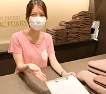

ABOUT
平林 真奈
| 生年月日 | 1993.4.15 |
|---|---|
| 血液型 | A型 |
| 出身地 | 東京都 |
| 長所 | 責任感が強い、継続が得意、よく笑う |
| 短所 | 臆病、優柔不断 |
| 好きなこと | 音楽、猫、ジョギング、ネイル、食べること |

STRENGTH
コミュニケーションスキル
接客の仕事が好きで、ホスピタリティーのある接客を大切にしています。
相手に何かを伝える際は具体的な内容で、言い回しや声色・表情に気をつけ伝え方を工夫しています。
また報連相の徹底や傾聴することを心掛け、これらをZoomやSlackでのオンラインコミュニケーションへ活かしています。
リーダーシップ
ヨガスタジオの店長就任時、新店舗立ち上げの際に、どんな店舗を目指したいかビジョンを描き、スタッフ全員に共有しました。 （当時の資料PDF）
こだわりを持ち、最後までやり通す責任感とややストイックな継続力が私の長所です。
先読みスキル
トラブル対応や緊急事態に備えて自分だったらどう対応するか考えるクセづけをしています。
日頃から優先順位をつけ、プランを考えて準備・実行する慎重な性格です。
勉強・向上心
仕事での失敗例・成功例など今後の参考となるようにノートに書き留めています。
その仕事に関する知識を得るための勉強をし、飲食業の頃はウイスキーの勉強。ヨガスタジオの頃はアロマテラピー検定・ダイエット検定・食生活アドバイザー検定を修得しました。
今後はWebコーダーとしての勉強し続け、現状に満足せず常に向上していきます。
-
小学校1年生で空手を習い始める。中学3年生で初段・黒帯を修得。その後19歳まで続ける。

-
中学・高校時代は音楽に熱中し、高校卒業後は尚美ミュージックカレッジ専門学校に入学。プロミュージシャン学科にてギターを専攻しバンド活動を行う。
- 2015年4月 株式会社プロントサービスに入社。飲食事業をメインに、人材支援部やケータリング事業部に所属。
-
2017年3月 チェルシー株式会社に入社。ホットヨガスタジオのフロントスタッフとして勤務。入社3年目で店長に就任、新店舗の立ち上げに携わる。
 - 2022年1月 デジタルハリウッド Webデザイン専攻に入学。仕事で掲示物を作成することが楽しかったことをきっかけにデザインに興味を持ち勉強を始める。
- 2022年2月末 勉強に専念するため5年間勤めたチェルシー株式会社を退職。
- 2022年6月末 デジタルハリウッド Webデザイン専攻 修了。現在Webデザイン・フロントエンド技術学習のスクールコミュニティーに参加し勉強中。